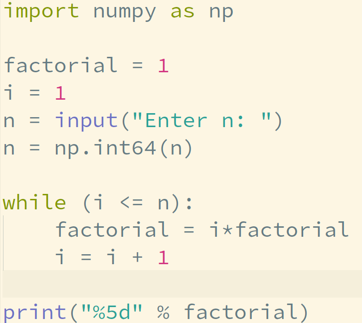

ES118 Lecture #9
flowcharts and pseudocodes
Ufuk Baler, MSc. & Asst. Prof. Dr. Fethi Okyar
Table of Contents
What is an algorithm?
Informal definition:
a set of rules for solving a problem in a finite number of steps
Algorithm representations
An algorithm can be represented with two methods
- flowcharts
- pseudocodes
Flowchart
- independent of the programming language
- illustrations
if,if-else,elif,for, andwhilecan be illustrated
if flowchart
the code implementation
if-else flowchart
the code implementation
while flowchart
the code implementation
while flowchart (continued)
the code implementation
for flowchart
the code implementation
for flowchart (continued)

the code implementation
the code implementation

A flowchart example for finding whether a number prime or not
Inspired by https://www.programiz.com/dsa/algorithm
the code implementation
Pseudocode
- We might be given a set of instructions in a generic format: A pseudocode
- A pseudocode is independent from the programming language syntax
- It is a general representation of an algorithm
- It is similar to a flowchart, but in text
- One advantage over flowchart is its smaller size on the page
The pseudocode for finding the factorial
the code implementation
The pseudocode for finding whether a number prime or not
the code implementation
Deliverables
- Motivation to algorithmic thinking
- Construction and implementation of flowcharts and pseudocodes